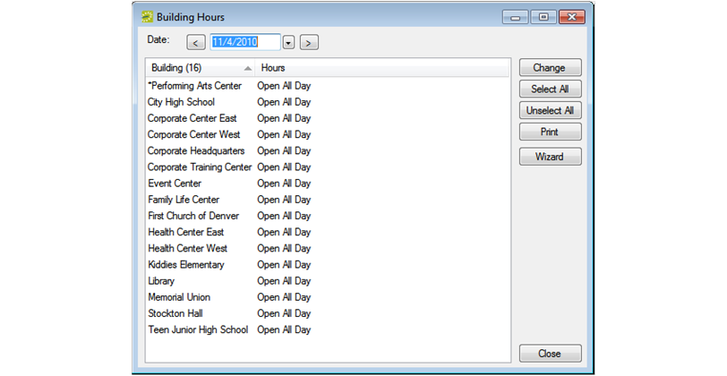
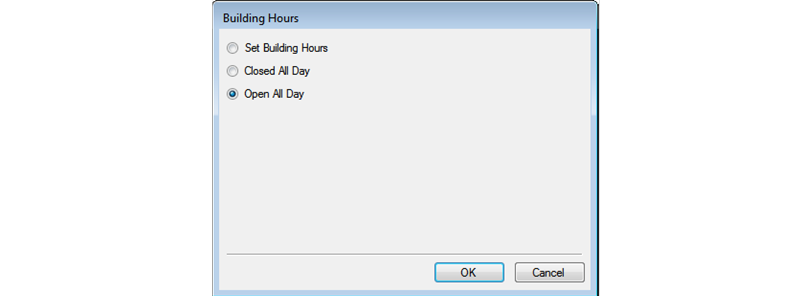

Configuring Building Hours
By configuring building hours, you can set times when buildings and rooms therein are not available for scheduling.
In the EMS Desktop Client, configured building hours do not prevent a user from scheduling events outside these hours. A user is merely warned that the event is being scheduled outside normal operating hours. In EMS Web App, users cannot schedule events outside the configured building hours. Setup and teardown hours must also fall within the configured building hours for an event that is scheduled in EMS Web App.
By default, when you configure a building, the building hours are set to Open All Day, which means that the building is open 24 hours a day, 7 days a week, 365 days a year. If needed, you can configure the hours for a building so that a building is open only for a specified time period on a particular date or for a given date range. You can also configure the hours so that a building is closed all day. You can configure the hours for a building for a single date, or you can configure the hours for multiple dates in a single step.
Tip:You can configure the same hours for multiple buildings using the Building Hours Wizard.
- On the EMS Desktop Client menu bar, click Configuration > Facilities > Building Hours. The Building Hours window opens. This window lists buildings that are configured in your EMS database.
Building Hours Window

- In the Date field, leave the default value of the current day’s date, or select a different date.
- Select the building, or CTRL-click to select the multiple buildings for which you are changing the hours, and then click Change. The Building Hours dialog box opens.

Tip:If you select multiple buildings, then the Building Hours dialog box reflects the hours for the building that is last in the list of selected buildings. You can set the same building hours for multiple buildings at once using the Building Hours Wizard.
- Set the new hours for the buildings as appropriate.
|
Description |
|---|---|
|
Select this option to specify the time period (Open and Close) during which the building is to remain open for the date. Your EMS Desktop Client users can make reservations on this date in the selected buildings even if the events are scheduled outside the indicated time period. They merely receive a warning that the reservation time exceeds building hours. Note: EMS Web App users cannot make reservations outside of building hours. |
|
Select this option to close the building for the entire day. When you select this option, then a Web Only option is displayed on the Building Hours dialog box. • If you do not select Web Only, then none of your users (EMS Desktop Client or EMS Web App) can make reservations on this date in the selected buildings. • If you do you select Web Only, then your EMS Desktop Client users can make reservations on this date in the selected buildings; however, your EMS Web App users cannot. |
|
The default value. Leave this option selected to have the building remain open for the entire holiday. |
- Click OK to return to the Building Hours window.